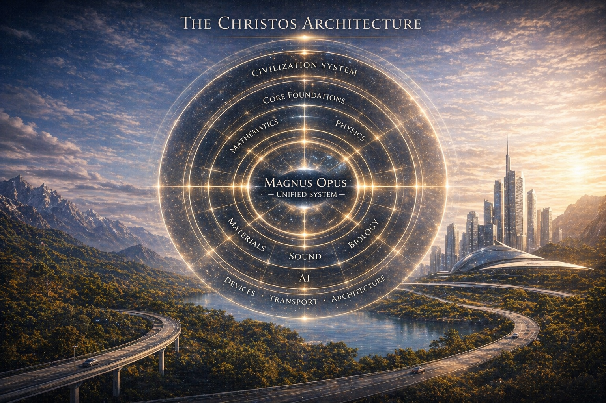
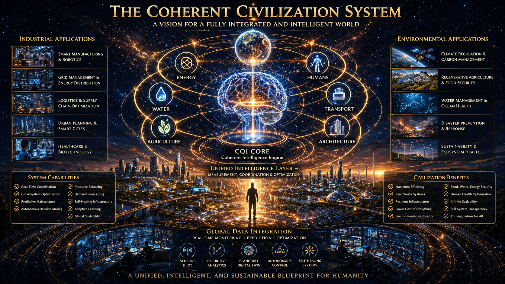
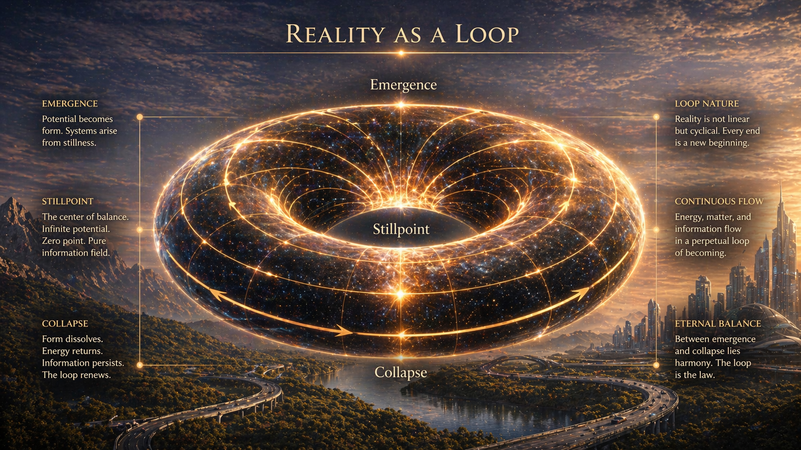
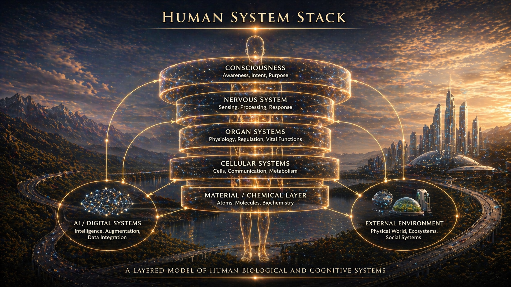
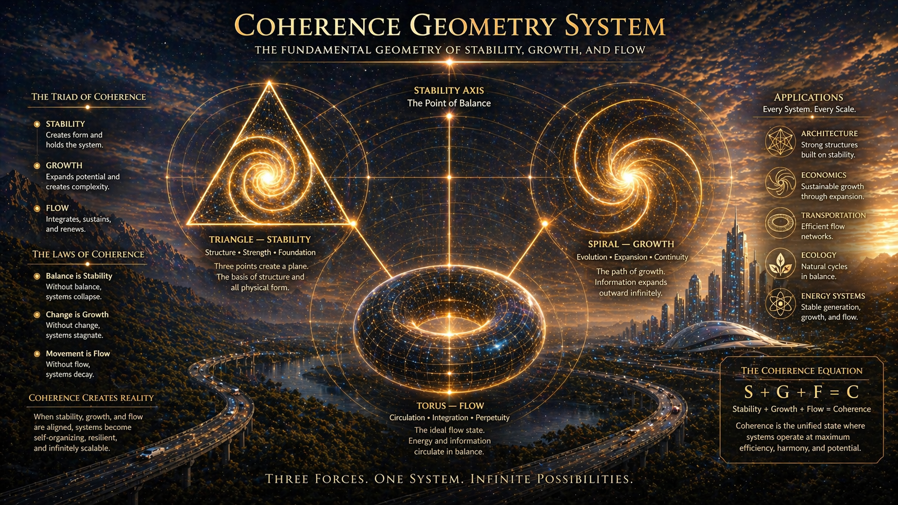

A unified research platform spanning physics, biology, materials, transport, intelligence, and civilization-scale design.
279 original research papers. 1,000+ inventions. One coherent architecture. Everything built on a single governing principle — coherence — applied across every domain of human knowledge.

Your organization is losing more than you think. We find exactly where.
The Christos™ Sovereign Circulation Framework identifies where value is leaking out of your system — and what it costs you every year. From hospitals and logistics companies to governments, the framework applies wherever value flows. Three conversations. One clear answer. Performance fee options available.
These papers serve as the primary public-facing introduction to the Christos architecture. Select foundational papers are published in full open access. Papers containing proprietary inventions present abstract-level visibility only.
Each diagram maps a distinct layer of the Christos system — from foundational geometry to civilization-scale infrastructure. Together they show how the entire platform connects into one.




Browse the full library by domain — 18 research domains including a dedicated Expected Next Frontiers section. Select foundational papers are published in full open access. Papers containing proprietary inventions present abstract-level visibility only, with full technical architecture available through protected collaboration pathways.
Public pages present abstract-level visibility only. Full technical architecture, implementation specifications, and proprietary system detail are not published openly. Collaboration proceeds through a structured, vetted process.
Two foundational texts of the Christos™ framework are now available as free downloads. Both are released openly as architectural disclosures — inviting researchers, builders, and institutions to engage with the work.
The foundational text of the Christos™ framework. A unified architectural disclosure integrating physics, consciousness, geometry, and biological systems into a single coherent model.
Read Magnus Opus →A complete coherence-based biofield communication model — a structured system of breath, tone, gesture, and intention built entirely on the physics of the biofield.
Read Sovereign Logos Prime →Independent researcher and inventor developing integrated systems across coherence theory, physics, biology, materials science, artificial intelligence, transportation, and civilization-scale architecture.
What began as a unified framework has grown into a 279-paper research platform containing over 1,000 original inventions spanning every major domain of applied science and infrastructure design.